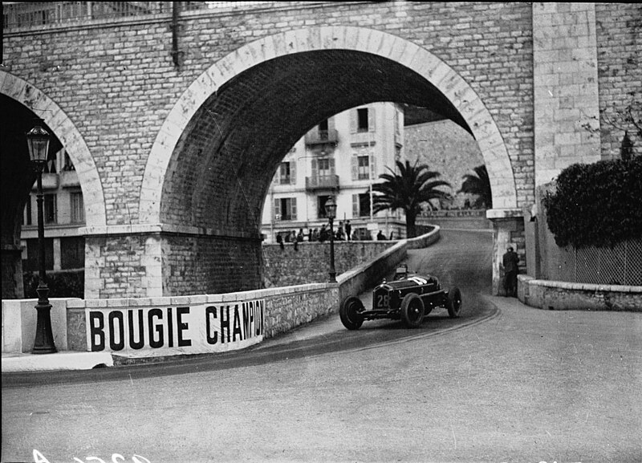

HISTORIA

< Las carreras de Gran Premio tienen sus raíces en las carreras automovilísticas surgidas en Francia en 1894. En un principio se trataba de eventos individuales, sin conexión y en caminos de tierra, prácticamente sin ninguna limitación. De 1927 a 1934, el número de carreras consideradas Gran Premio creció hasta alcanzar dieciocho en 1934, el máximo antes de la Segunda Guerra Mundial.El primer Gran Premio se realizó el 13 de mayo de 1950 en el circuito de Silverstone y fue ganado por el italiano Giuseppe Farina, consiguiendo además el campeonato de 1950 tras vencer a su compañero de equipo, el argentino Juan Manuel Fangio (ambos en la escudería Alfa Romeo). Sin embargo, Fangio ganó el título en 1951, 1954, 1955, 1956 y 1957. Su racha fue interrumpida debido al bicampeonato del piloto de Ferrari Alberto Ascari.
pagina principal
.